liudmilamashkina@gmail.com
class LiudmilaMaskina : public SoftwareEngineer,
public FashionDesigner {
|
};
| Hello! My name is Liudmila |
I am a Fashion Designer and a Software Engineer - two in one.
How it has happened? Rather simple! My husband got new interesting job in Prague, while we were living in Moscow, and our moving to Czech Republic presented me some free time and apportunity to try programming, as I already wished for long time. So... I decided to invest this time in to self-development. |
| and I can Do Both | |
|
Current site is about me,
wrote and designed by me. |
| and | I can |
| Do | Both |

| supervised learning | unsupervised learning | |
| I educated free in the leading Russian design university (MSU DT) and graduated with distinction. And as a result I found good job in the best Russian fashion company - Bosco Sport. | I'm self-educated C++ programmer and already wrote my own game for mobile platforms, using this language (and some Python).Object Oriented Programming and Design Patterns are not just hollow consepts for me. And during Christmas holidays I wrote my first site. | |

|
| I LOVE... |
learning

NEW |
It is impossible to spend in Prague rather
long time and do not fell in love with draft
Black Kozel (cerpane Cerne Kozel) or Master...
|
| solving complex problems! |
On every level of my life I alwayse tried to get more.
bla bla bla bla blabla bla bla bla bla blabla bla bla bla bla blabla bla bla bla bla blabla bla bla bla bla blabla bla bla bla bla bla . |
|
| I used binary search when I was only Fashion Designer and even didn’t know this term. | ||

|
...but sometimes it is SO hard to force yourself to do it... | BEEEEEEEER! |
| It was my way for finding broken page in our catalogs for print, which could content over 200 pages. |